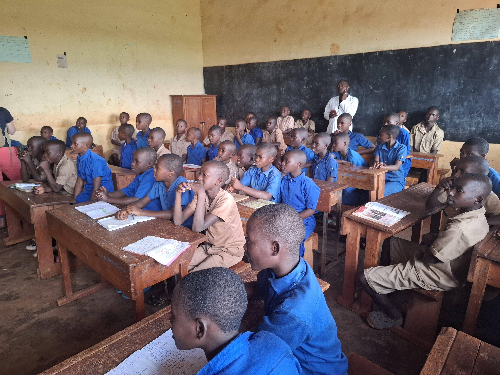
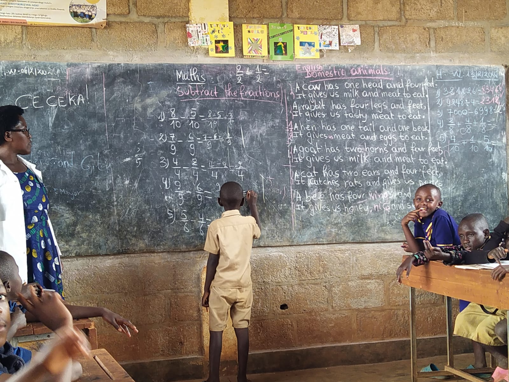
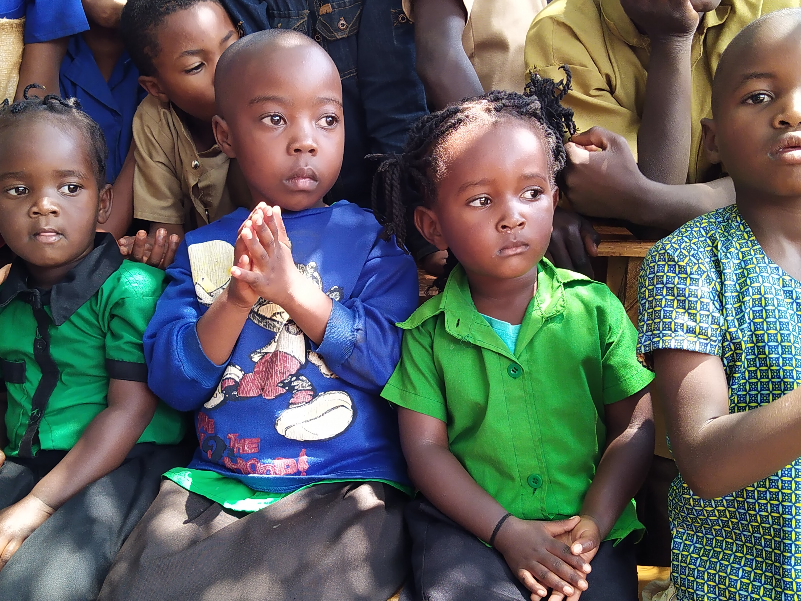
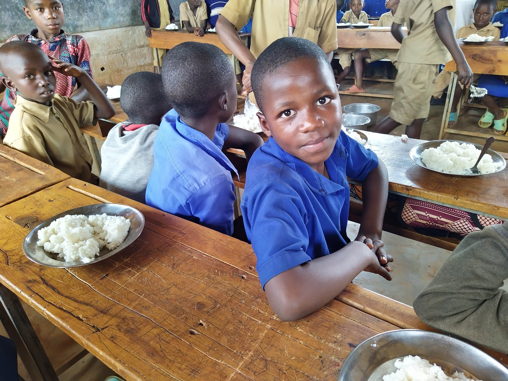

L’école de Magi
Apprendre dans un cadre qui donne confiance.
L’école est au centre de notre action. Nous souhaitons contribuer à ce que les enfants disposent de conditions d’apprentissage dignes, accueillantes et adaptées.
Un lieu de vie
Une école, ce sont des élèves, des enseignants, des familles et toute une communauté. Au-delà des bâtiments et du matériel, notre soutien cherche à favoriser un environnement dans lequel chaque enfant peut apprendre, progresser et prendre confiance.
Les besoins du quotidien
- Mobilier et matériel pédagogique
- Fournitures scolaires
- Amélioration des salles et des espaces communs
- Équipements utiles aux apprentissages
- Accompagnement des élèves les plus fragiles


